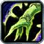

Les chamans sont des guides spirituels qui font appel à des puissances non pas divines mais élémentaires. Ce mysticisme particulier amène le chaman à communier avec des forces qui ne sont pas toujours bienveillantes. Les éléments sont chaotiques, et livrés à eux-mêmes, ils se déchaînent les uns contre les autres dans une fureur primale permanente. Il est du devoir des chamans d’amener un équilibre dans ce chaos. Capable de modérer la terre, le feu, l’eau et l’air, le chaman invoque des totems qui dirigent ces forces pour soutenir ses alliés ou frapper leurs adversaires.
 SOINS
En canalisant l'énergie des esprits, le chaman est un soigneur efficace.
DÉGÂTS AU CORPS À CORPS
Le chaman peut doter ses armes de pouvoirs élémentaires qui brûlent, gèlent ou produisent des effets divers sur les cibles de ses attaques.
DÉGÂTS À DISTANCE
Maître des éléments, le chaman peut les façonner afin de faire tomber la foudre sur l’ennemi.
TOTEMS
Les totems posés par un chaman produisent nombre d’effets bénéfiques. Ils peuvent notamment régénérer les alliés, augmenter les dégâts qu’ils infligent ou leur vitesse d’attaque.
 ARMURES ACCESSIBLES
ARMURES ACCESSIBLES
Tissu, Cuir, Maille, Boucliers
les chamans peuvent utiliser des armures de Tissu, cuir, Maille et aussi des boucliers. Ils ont donc une armure semi-lourde avec un bouclier et moyenne sans bouclier.
 ARMES ACCESSIBLES
ARMES ACCESSIBLES
Dagues, Armes de pugilat, Haches à une main, Masses à une main, Bâtons, Haches à deux mains, Masses à deux mains
 TALENTS
TALENTS
Vous pouvez choisir soit la spécialisation Restauration (heal) qui est un soigneur, soit la spécialisation Amélioration (corps à corps) qui est Spécialiste des dégâts physiques de mêlée, ou soit la spécialisation Élementaire (Sorts à distance) qui est Spécialiste des dégâts magiques.
les raciaux sont indiqués par ordre d'importance
 Alliance :
Alliance : Horde :
Horde :
 Orc :
Orc : Solidité : Augmente les chances de résister aux effets d'étourdissement de 15%
Solidité : Augmente les chances de résister aux effets d'étourdissement de 15% Fureur sanguinaire : Augmente la puissance d'attaque et les dégats des sorts et soins, mais réduit les effets de soins réçu de 50% pendant 15 sec
Fureur sanguinaire : Augmente la puissance d'attaque et les dégats des sorts et soins, mais réduit les effets de soins réçu de 50% pendant 15 sec Spécialisation Hache : Augmente l'expertise avec les Haches à une main et à deux mains de 5
Spécialisation Hache : Augmente l'expertise avec les Haches à une main et à deux mains de 5 Commandement : Dégâts infligés par les familiers des chasseurs et démonistes augmentés de 5%
Commandement : Dégâts infligés par les familiers des chasseurs et démonistes augmentés de 5% Le choix
Le choixToutes ces races ont leurs avantages. Si vous comptez jouer dans l'alliance, vous n'aurez pas de choix à faire.
Par contre pour la horde, selon moi la meilleurs classe à prendre si on veux se spé Élémentaire serait soit l'Orc qui offre une résist aux étourdissement de 15% ce qui est énorme et augmente les dégats avec Fureur sanguinaire ce qui n'est pas négligeable.
Ou alors le Tauren qui à l'endurance augmenté, donc plus de points de vie, et la capacité d'étourdir 5 ennemis, idéal pour placer un sort, un heal ou s'échapper.
Si on veux jouer Restauration, N'importe quelle classe peut coller, même si j'aurais une préfèrence pour l'Orc ou le Tauren
Si on compte jouer Améliorattion, le Tauren reste selon moi le bon choix, mais l'Orc et le Troll reste viable aussi, avec son sort d'accélération de la vitesse aux corps à corps et des sorts..
Après tout va dépendre de votre game play.
 Haut de page
Haut de page